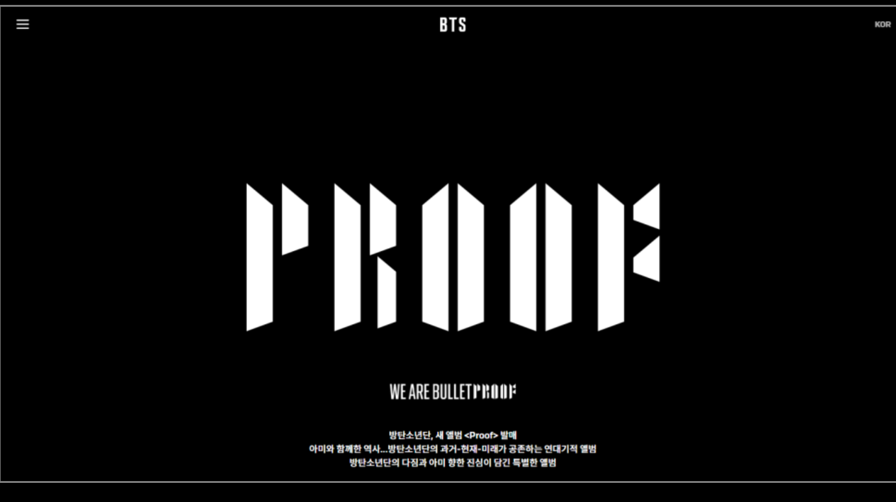

HYBE(빅히트뮤직) 소속 BTS의 앨범 「Proof」 프로모션 홈페이지 기획. 아트디렉터의 크리에이티브 방향을 실제 웹 구현 사양으로 번역하고, 콘텐츠별·오픈 일정별로 복잡하게 얽힌 배포 계획을 조율한 프로젝트입니다.

「Proof」는 BTS 데뷔 9주년을 기념하는 앤솔로지 앨범으로, 홈페이지에는 MY BTS ARCHIVE라는 팬 참여형 섹션이 새롭게 들어갈 예정이었습니다. 다만 이 섹션은 구체적인 화면 사양 없이 아트디렉터의 아이디어를 구두로 전달받는 단계에서 시작해, 이를 개발 가능한 기획서로 번역하는 과정 자체가 난이도 높은 작업이었습니다.
MY BTS ARCHIVE 섹션은 화면 설계 없이 컨셉 수준의 아이디어로만 전달됨
티저·앨범·포토·인터뷰 등 콘텐츠 종류별로 공개 일정이 모두 다르게 설계됨
아트디렉터·개발팀·BTS팀 사이에서 요구사항이 중개 없이는 정렬되기 어려움
글로벌 팬덤이 사용하는 홈페이지라 오류·지연에 대한 허용 범위가 매우 좁음
화면 사양이 없는 상태에서 시작했기 때문에, 아이디어를 듣고 바로 기획서를 쓰기보다 아트디렉터·개발자 사이의 커뮤니케이션 창구 역할을 먼저 맡는 것으로 접근했습니다.
아트디렉터의 구두 아이디어를 화면 단위로 쪼개 초안 기획서로 먼저 시각화
배포 계획을 "콘텐츠 종류별"과 "오픈 일자별" 두 축으로 각각 문서화해 혼선 방지
아트디렉터·개발자 사이의 이견을 기획서 수정으로 계속 좁혀가며 방향 합의
콘텐츠별 순차 오픈 일정에 맞춰 항목별 QA 진행
콘텐츠별·오픈일정별 복잡한 배포 계획을 예정대로 완수
콘텐츠별 · 오픈일정별 이원화된 일정표로 배포 혼선 방지
아트디렉터·개발팀 간 커뮤니케이션 중개자 역할 수행
MY BTS ARCHIVE 섹션은 아이디어를 듣고 기획하는 것 자체에 어려움이 있었습니다. 화면 사양이 정해지지 않은 상태에서 아트디렉터의 상상과 실제 구현 가능한 범위 사이의 간극을 메워야 했습니다.
아트디렉터와 개발자 사이에서 기획서를 통한 소통을 반복하면서, 레퍼런스 페이지와 아트디렉터의 요구를 모두 충족하는 방향으로 BTS팀이 원하는 결과물과 일정을 완수할 수 있었습니다.
* 본 자료는 포트폴리오 목적으로 개인 기여 범위와 작업 프로세스만을 요약해 공개했습니다. 클라이언트사(HYBE)의 내부 기획 문서·화면 사양·계약 정보는 포함하지 않았습니다.
chaejenn@gmail.com